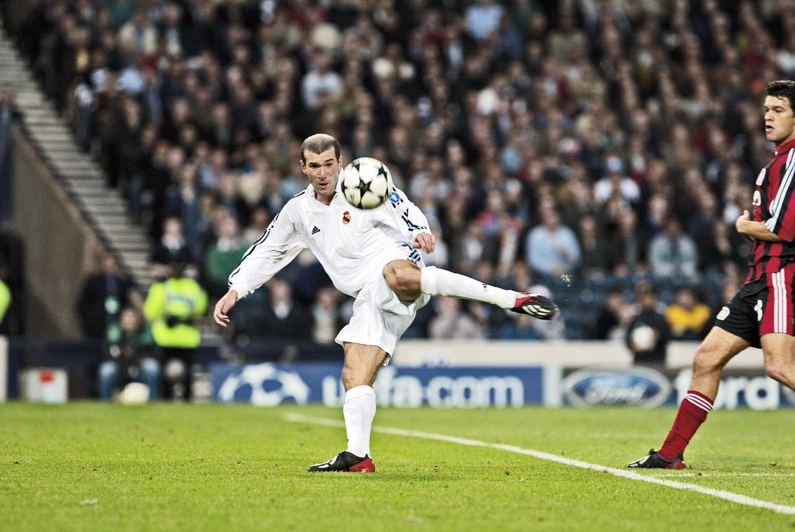

زين الدين زيدان
2001 · 2006
زين الدين زيدان
2001 · 2006
المركز في الملعب: لاعب وسط
عدد المباريات التي خاضها: 155 مباراة
عدد الأهداف المسجلة: 38 هدفا
المباريات الدولية مع فرنسا: 93 مباراة
زين الدين زيدان عبقري ترك بصمة وحدد مرحلة في كرة القدم العالمية بأناقته وجودته الفنية. وهو ذات موهبة طبيعي في كرة القدم. وقد حاز على جميع الألقاب مع النوادي التي لعب في صفوفها مع المنتخب الفرنسي. وهو لاعب ساحر اختار اختتام مسيرته الرياضية في ريال مدريد والفوز معه ببطولة أبطال أوروبا عام 2002.
ونشأ زيدان في مارسيليا، في حضن عائلة جزائرية، وقد انتقل من صفوف الناشئين في مدينته ومسقط رأسه الى فريق (كان) الذي لعب معه في دوري الدرجة الأولى بعمر 17 عاما. وفي عام 1992 وبعد هبوط فريقه السابق الى دوري الدرجة الثانية، انتقل زيدان الى نادي (جيروندينس دي بوردو) لكرة القدم وبدأ هناك باكتساب شهرة عالمية.
في عام 1996، وعقب خوضه نهائي كأس يويفا مع جيروندينس وكأس الأمم الأوروبية مع فرنسا، انضم اللاعب إلى يوفنتوس. وقد تزامنت المرحلة التي قضاها زيدان مع الفريق الإيطالي حيث فاز بجائزة الكرة الذهبية في 1998، مع أفضل نجاحاته مع منتخب بلاده. قاد زيدان المنتخب الفرنسي إلى الفوز بكأس العالم في 1998 بكأس الأمم الأوروبية في 2000. وقد أكدت تلك الانتصارات تفوقه كأفضل لاعب في ذلك الوقت ما اثار اهتمام ريال مدريد. وقد ضمه الرئيس فلورينتينو بيريز إلى صفوف النادي في يوليو 2001.
وقال زيدان في حفل تقديمه كلاعب جديد في صفوف ريال مدريد "أردت أن أفوز بكأس أوروبا وأردت أن افوز به مع ريال مدريد". ولم يخطئ في ذلك، وأحرز بطولة أبطال أوروبا في العام التالي مع الريال محرزا بذلك أيضا لقبه الأول بالبطولة وشارك بشكل حيوي في ذلك بتسجيل هدف النصر في شباك فريق (باير ليفركوزن) الألماني، حيث أنهى ببراعة وبالقدم اليسرى تمريرة من روبرتو كالورس في حركة اشبه بالسحر.
اعتزل زيزو كرة القدم عقب نهائي كأس العالم في ألمانيا عام 2006. وكان ريال مدريد فريقه .واستمر العبقري الفرنسي في النادي مستشارا لرئيسه بداية، ثم استمر العبقري الفرنسي في نادي ريال مدريد وشغل بداية منصب مستشار الرئيس، ثم مدرباً ثانياً للفريق الأول، ومديراً فنياً للفريق الرديف كاسيتا، وهو حاليا المدير الفني للفريق الأول بالنادي. في عام 2017، فاز بجائزة The Best لأفضل مدربٍ في العالم
1 دوري أبطال أوروبا
1 كأس الانتركونتيننتال
1 كأس السوبر الأوروبي
1 الدوري الاسباني
2 كأس السوبر الإسباني
1 كأس العالم مع المنتخب الفرنسي
1 بطولة أمم أوروبا لكرة القدم مع المنتخب الفرنسي
3 دوري أبطال أوروبا
1 كأس العالم للأندية
2 كأس السوبر الأوروبي
1 الدوري الاسباني
1 كأس السوبر الإسباني